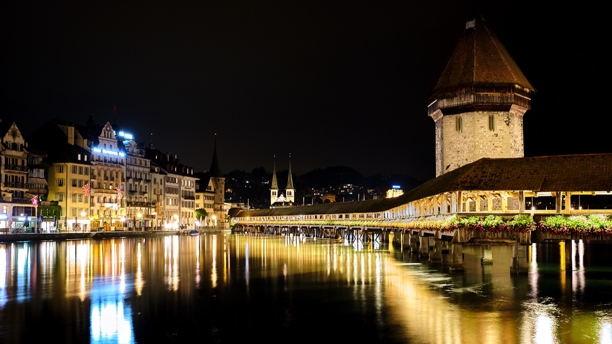
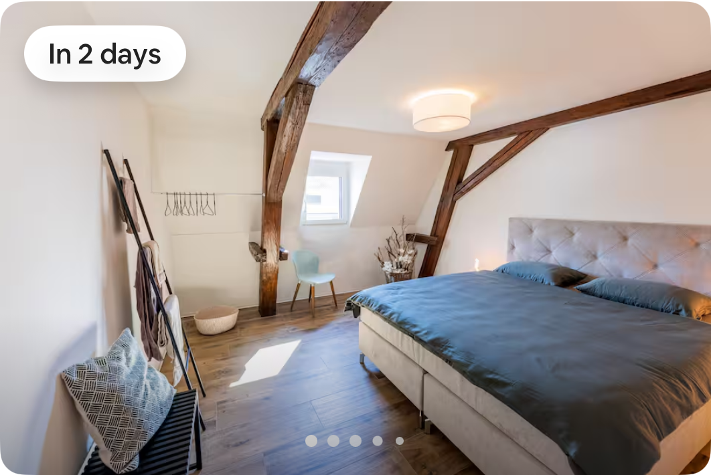

Swiss direct flight, Monday Jun 15.

Now / next
Open map
Trip starts Monday morning
Swiss time --:--
Auto-updates
The itinerary is ordered by local Switzerland time.
Pickup at ZRH, Basel pickup/drop, return to ZRH for the outbound flight.
Maihofstrasse 39. Check-in 15:00, checkout 11:00.
First cable car, Lake Lucerne boat, Rigi rail/cable options, and Swiss Museum tickets now have official links on the relevant stops. Basel pickup/drop assumes EuroAirport; swap to Basel SBB or a hotel if that is the real point.
Route overview
Full arrival route
Four days, one-tap directions
Travel and activity stops have one-tap Google Maps actions, plus tickets, menus, parking, or timetable links where they matter. Work cards stay in the flow without map buttons.
What I would change on the fly
Keep Thun only if the flight, rental pickup, Basel pickup, and Bern lunch are smooth. Otherwise skip Thun and protect Lucerne check-in.
EuroAirport, Basel SBB, and a hotel pickup are different routes. Set the exact pickup/drop point before leaving Zurich.
Prioritize First Cliff Walk and Rigi Kulm only if visibility is good. The museum is the best rainy-day pressure valve.
Mainland Spain and Switzerland match in June. The Jun 15 Teddy call is 10:00 Pacific, which converts to 19:00 CEST; Jun 16 19:30 overlaps dinner, and Jun 18 18:00 is during the return flight.
If using the Thun detour, buy breakfast and snacks only. Perishables can wait until Lucerne unless you have a cooler bag.

Stay
Home in Luzern
Hosted by Nico. Check-in Monday Jun 15 at 3:00 PM; checkout Thursday Jun 18 at 11:00 AM.
Open addressItinerary source: uploaded spreadsheet, travel screenshots, and official venue/operator pages. Destination images are local copies from public venue/operator pages where available; lodging image is cropped from your uploaded Airbnb screenshot.